Rodic Davidson: London Architecture
Our Bloomsbury based practice has been working in central London
since 2006. Having worked within the oldest areas of London, we
have developed an expertise in historic buildings. These are often
Listed and situated within a Conservation Area. Our knowledge and
experience consistently secure Planning Consents,
Listed Building Consents and Great Estate
Licenses.
Many areas within central London boroughs were originally
developed by aristocratic families (examples being Grosvenor,
Cadogan, De Walden, Portman and Bedford), and these family estates
still own large swathes of, what is now commonly referred to as,
Prime Central London. These Great Estates maintain significant
influence either through direct ownership or through various
stewardship schemes, an example being the Belgrave Estate
Management Scheme administered by Grosvenor. Schemes such as this
enable the Estate to exert control over the use, development, and
appearance of the designated area.
We have a growing body of new-build work in Prime Central London
and elsewhere in the UK. Through sensitive, contextual design and
iterative dialogue with Clients and Planners, Rodić Davidson have
established a track record of obtaining difficult planning
consents for both new-build and existing properties.
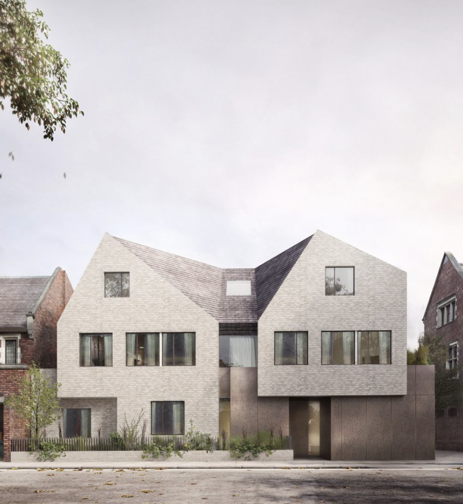
Five Apartments, Kensington
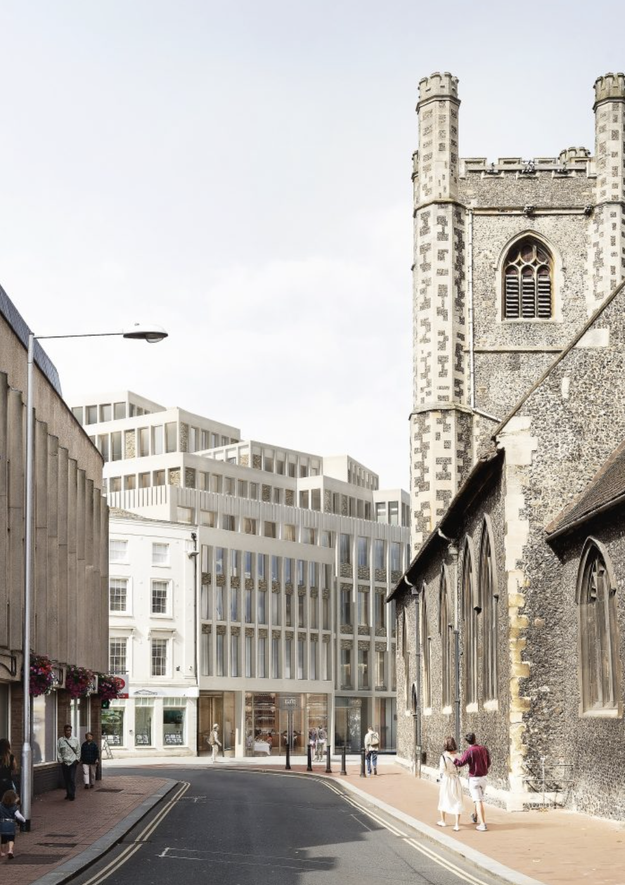
Market Square, Reading
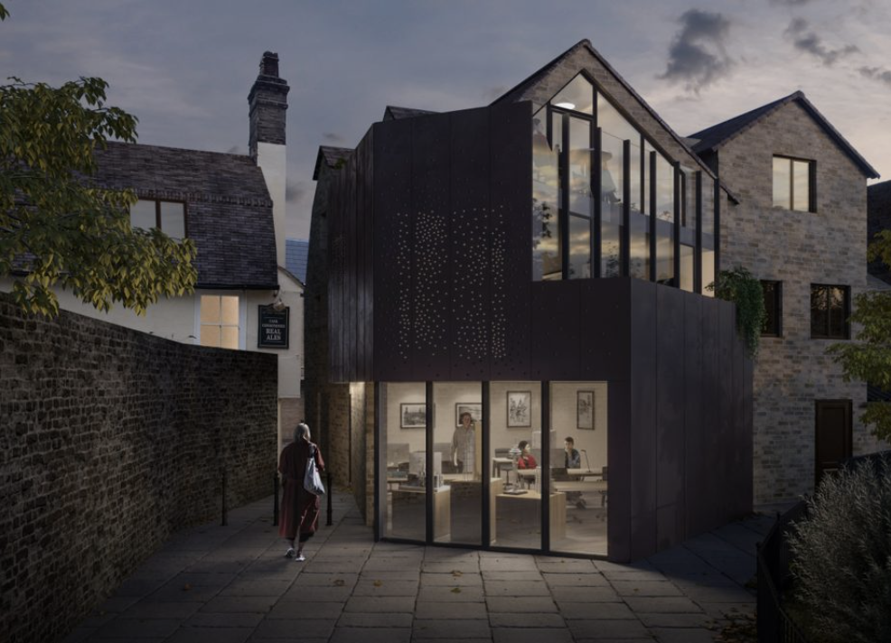
Planning Consent granted for New Contemporary Extension in
Cambridge Historic Centre
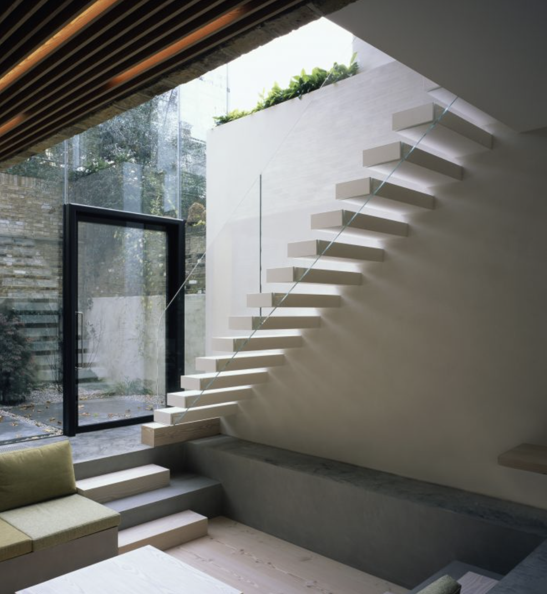
Sartor House, Chelsea
Who are we?
We are Rodić Davidson, an award-winning architecture, design, and
interiors studio with the belief that buildings are more than
brick and mortar; they are an extension of ourselves and our
environment. Our practice specializes in design-led and highly
crafted renovations and new-builds. We pride ourselves on an
ability to deliver thoughtful and imaginative design whilst
safeguarding our clients’ commercial interests. Licenses.
We are a RIBA Chartered Practice based in Bloomsbury, central
London. Whilst much of our work is local to us in London, the
practice has an expanding portfolio of work across the UK;
predominantly in the east and southeast of England but also
including projects reaching as far as Scotland. We have experience
working in rural locations, particularly in Norfolk, Suffolk, Kent
and Sussex where we have undertaken a number of farmstead and
country house projects, for both UK and overseas-based clients.
These projects often involve sensitive restoration of listed
buildings, usually with some more contemporary new-build
additions. The practice seeks to develop sensitive yet ambitious
design solutions that celebrate heritage while recognizing that
buildings are often now required to perform different functions
and should consume less carbon in doing so. In striving for lower
carbon design solutions, we look to insulate well and integrate
renewable technologies wherever possible.
Our Services
We offer complete design and management services with an objective
to always strive to add value through design. Our work is often
for forward-thinking owner-occupiers and developer clients, where
we seek to build relationships founded on a personal service,
creativity and shared ambition.
Our services include Architecture, Interior Design and Project
Management. We have a record of obtaining hard-won Planning and
Listed Building Permissions, working in strict legislative urban
environments such as The Royal Borough of Kensington and Chelsea,
London Borough of Camden, and City of Westminster. Outside of
London we have experience working in National Parks, Areas of
Outstanding Natural Beauty, Sites of Special Scientific Interest,
Green Belt and other designated areas.
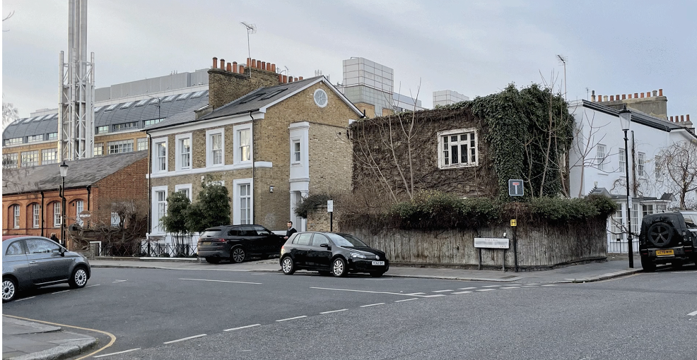
Planning Consent gained for New Build in RBKC Conservation
Area
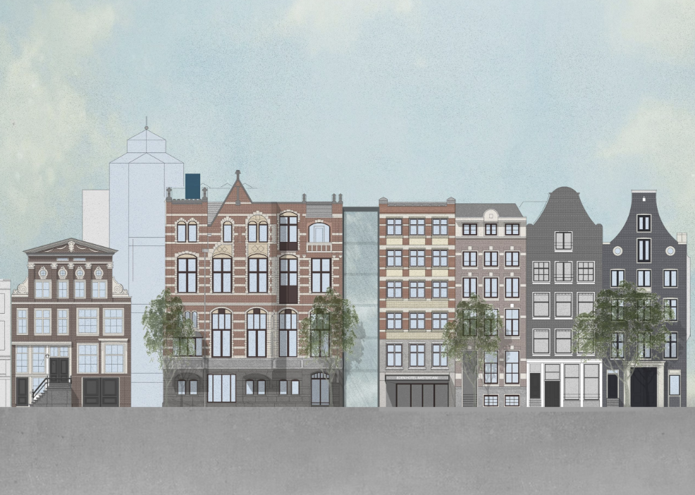
Instagram
Our Conservation Services
Much of our work, specifically that in Prime Central London,
involves the refurbishment, alteration and extension of houses and
historic buildings that are often Listed. This is often referred
to as Conservation Architecture. Rodić Davidson
have experience at working with all grades of Listed Building:
whether these be Grade 2, Grade 2* or Grade 1.
Our design response sometimes looks to introduce modern insertions
into historic buildings, thereby providing visual separation
between elements and allowing the historic fabric to be repaired
using traditional methods and materials. This approach can result
in clearly articulated functional spaces, allowing appreciation of
the traditionally proportioned rooms and spaces but also combining
new, larger spaces with clean crisp lines.
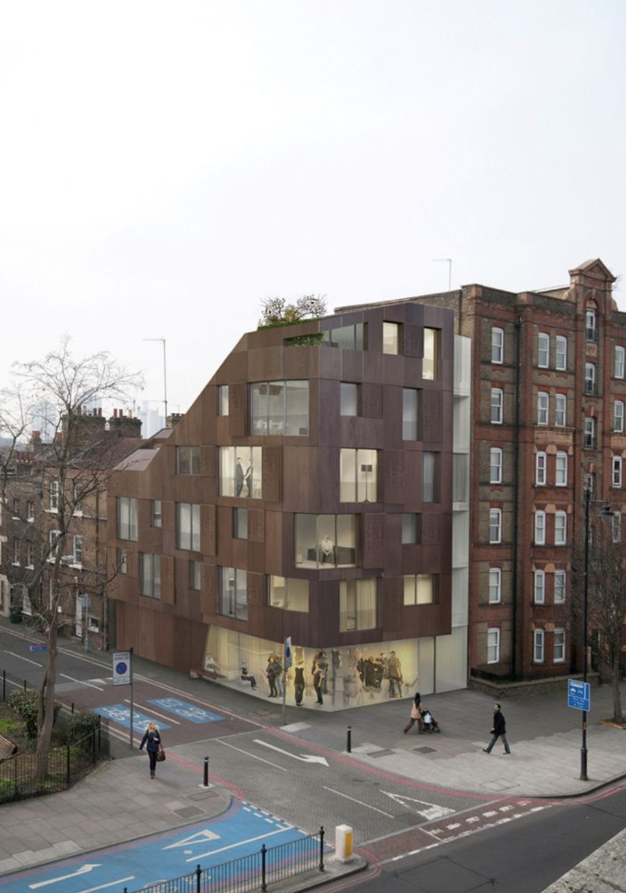
Mixed Use, Southwark
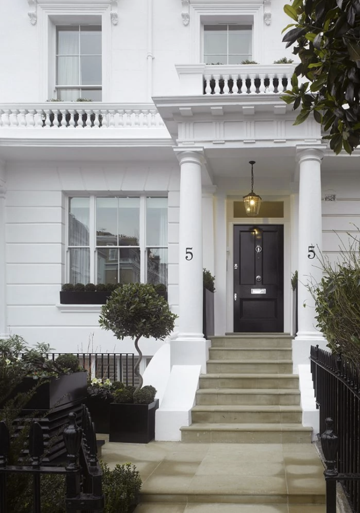
Town House, Kensington
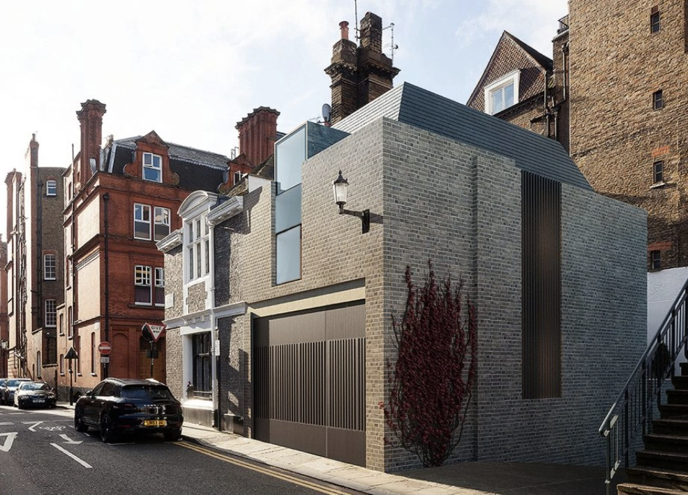
Planning and listed building consents granted for demolition and
new build house in the Royal Borough of Kensington and Chelsea
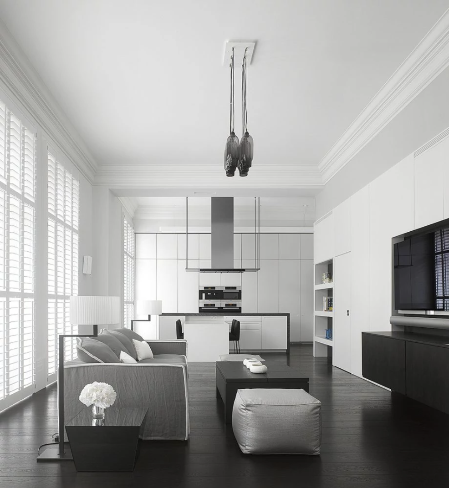
Former Embassy, Kensington
Our Project Management Services
Our practice has forged strong and trusted relationships with a
wide range of associated professionals and consultants. It is
these relationships which, in turn, contribute to the planning
consents and project outcomes that we achieve for our clients. We
believe in close engagement throughout the design process,
particularly with Conservation and Design Officers. Our pro-active
approach is guided by disciplined Project Management principles
which seek to accurately establish a project programme at the
outset and identify risk areas.
Our Interior Design Services
Rodić Davidson Interiors (RDI) are our in-house team of talented
and passionate interior designers. RDI works in
close collaboration with Rodić Davidson Architects to provide a
holistic design service to our clients. RDI has a growing number
of high-end residential projects, including the renovation of a
private property in Notting Hill and a contemporary
new build
house in Chelsea.
Our Service is bespoke and tailored to the client and project
requirements. We can provide detailed FF&E specifications and
schedules. We can also design and produce bespoke furniture using
our partnerships with skilled artisans and manufacturing
companies. We have beneficial trade accounts with top suppliers
and transparently pass on discounted pricing to our clients. We
produce detailed drawings and coordination packages, regularly
working alongside other client-appointed design consultants.
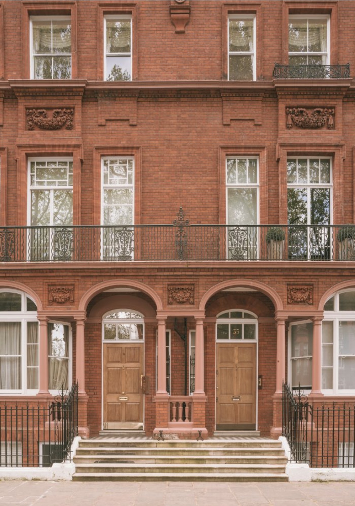
Hans Town Apartment, Knightsbridge
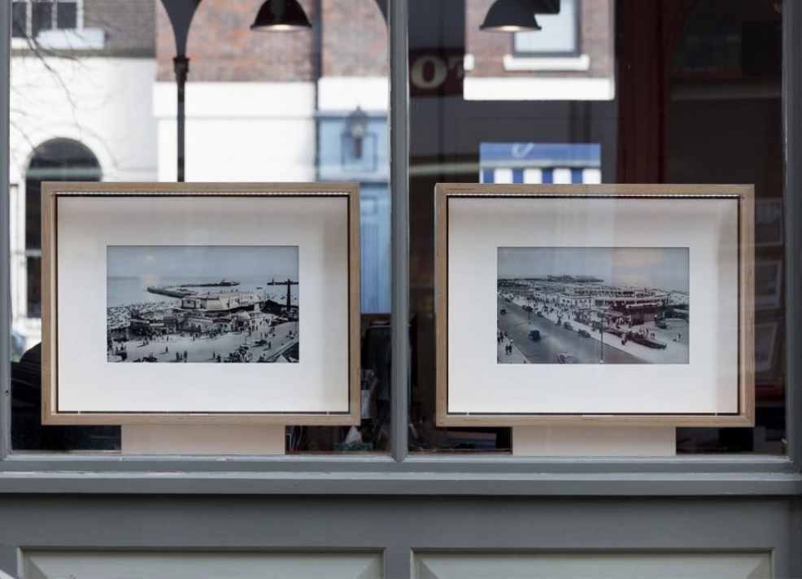
By the Light of a Silvery Moon, Jon Spencer
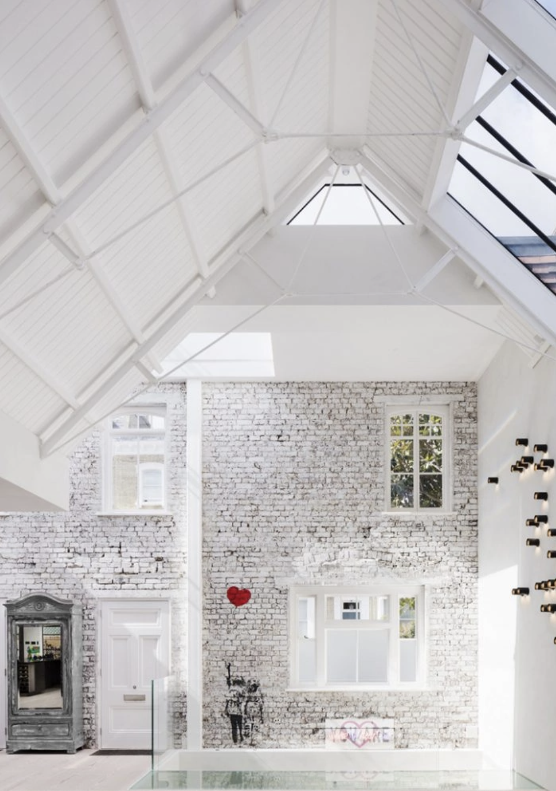
Former Artist's Studio #2, Chelsea
 Corner Cottage, Wimbledon
Corner Cottage, Wimbledon
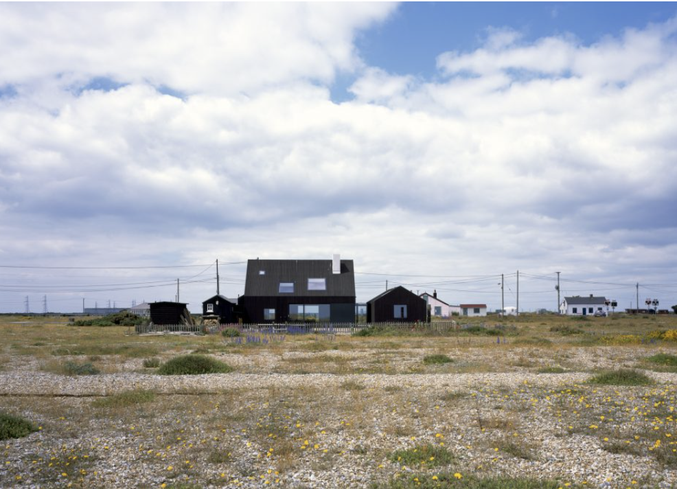
North Vat, Dungeness
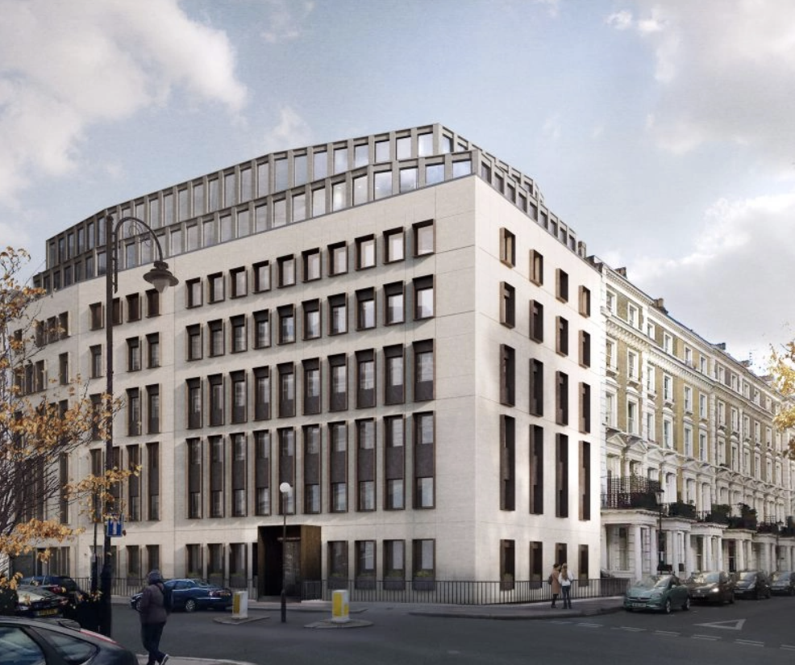
Ambassadors Hotel, Kensington
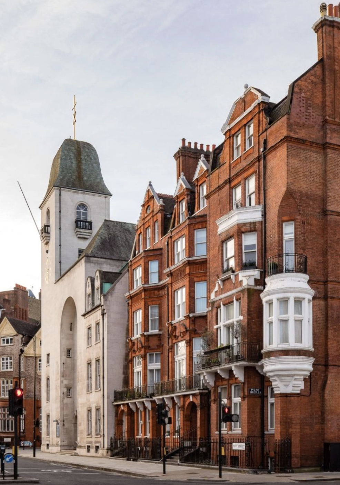
Queen Anne Apartment, Knightsbridge
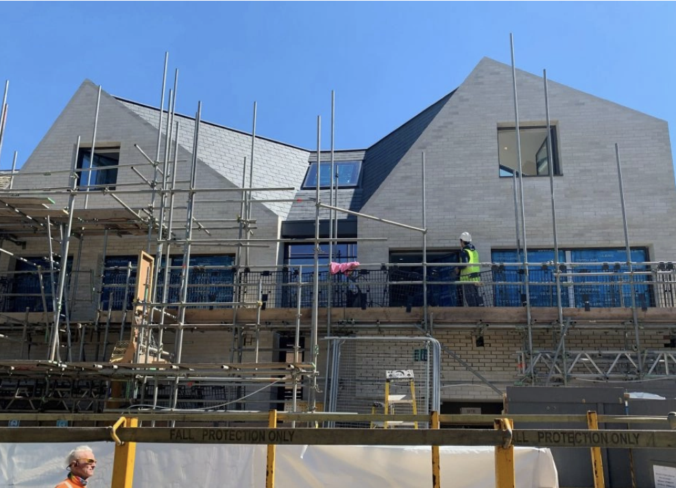
New-Build Apartments Under Construction in Kensington
Talk to our London team today
Rodić Davidson is always interested in new potential projects of
any scale. We offer a bespoke approach, guided by an expertise in
central London planning policy and historic buildings. One of our
team would love to hear about your property and discuss how we can
help.